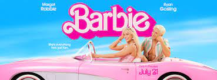
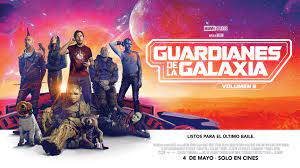
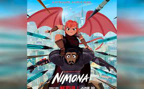

 Barbie: Una Pelicula que trata temas complejos como la Muerte y el Patriarcado ademas de la busqueda de uno mismo contando con una escenografia espectacular en BarbieLand recomendada para todo el Publico
|
La Sociedad de la Nieve: Una Pelicula cruda en la que no sabes quien podra sobrevivir, nuestros protagoniustas trataran de sobrevivir a la caida del avion, una pelicula recomendada para personas que les gusta el Drama y el suspenso
|
 Guardianes de la Galaxia: Una Pelicula familiar que trata temas como el maltrato animal esto a partir del protagonista Rocket, una pelicula que definitivamente te sorprende ademas que deja un buen sabor de boca terminar de verla
|
 Nimona: Una Pelicula que supera las expectativas, considerara como una Pelicula capaz de ganar del Oscar despues de ser nominada a mejor Pelicula de animacion, Nimona inspirada en un comic del mismo nombre e una pelicula que definitivamente no se deben perder
|